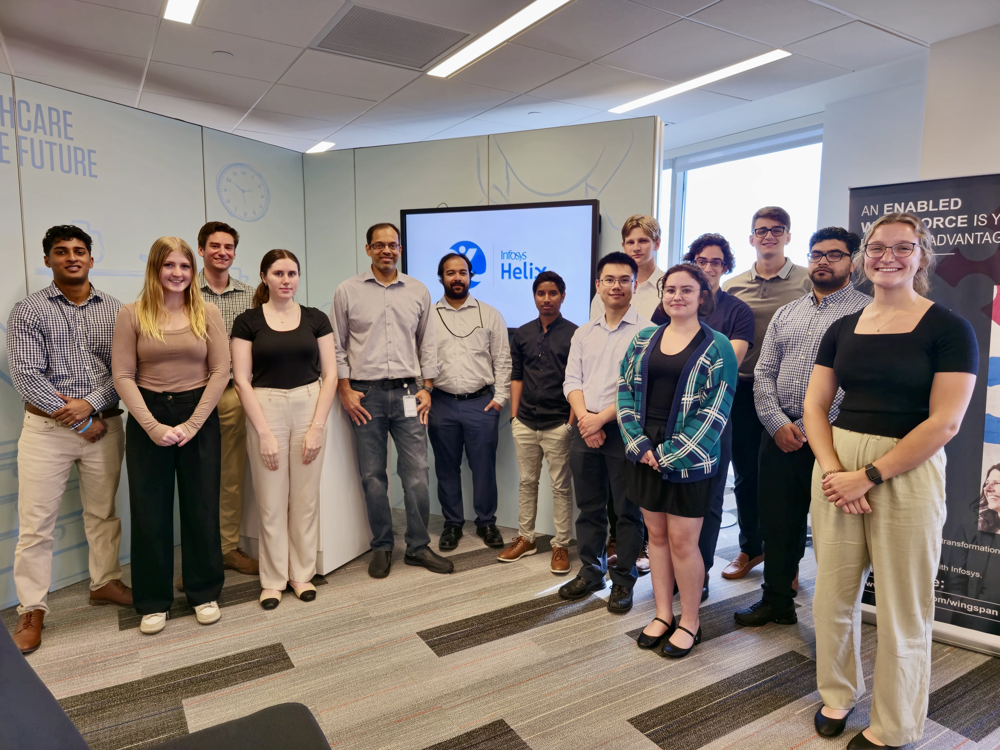
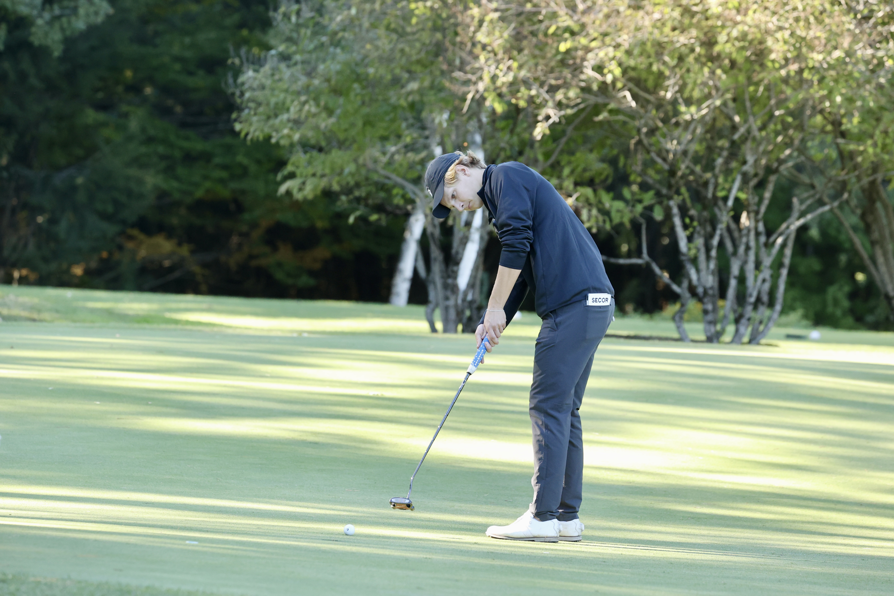
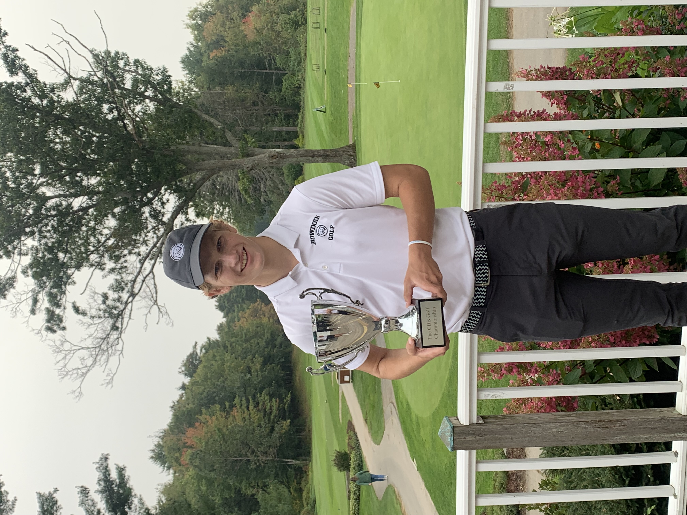

About Me

I am a junior at Bowdoin College studying Mathematics and Computer Science. I am passionate about problem-solving and aspire to contribute meaningfully to the world through my work. To view some of my recent projects, please click on the tabs above.
Courses
Software Engineering, Foundations of Computer Systems, Algorithms, GIS, Theory of Computation, Probability, Introduction to Mathematical Reasoning
Work Experience
In the summer of 2024, I worked as a Application Development Intern at Infosys in Hartford Conneticut. I led the development of a full-stack Java application to create a Healthcare Network Visualization tool, where I demonstrated leadership and project management skills by directing and contributing to the agile development process
In the summer of 2023, I worked as a Data Engineer Intern at Integral Ad Science (IAS) in New York City. I gained valuable experience at a data-driven public company, working with industry-leading tools and software. My focus was on optimizing data processing in AWS Kinesis and storage, conducting data quality analysis, and modifying pipelines. I enjoyed leveraging my work ethic and problem-solving skills, to contribute significantly to the company's sucess.
Extracurriculars
 At Bowdoin, I am a member of the Men's Golf team. My dedication has led to significant growth, progressing from a freshman walk-on to a leader of the team my junior year. I also represent the team on the Bowdoin Student Athlete Advisory Committee. My experience as a college athlete has taught me the importance of hard work, dedication, and striving for continuous improvement every day.
Contact Information
Email: bsecor@Bowdoin.edu
LinkedIn: LinkedIn Profile
GitHub: GitHub Profile